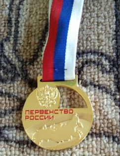
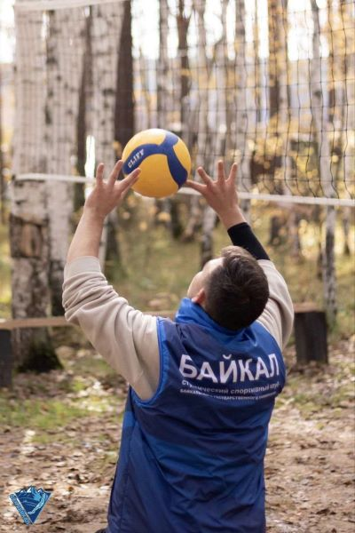

Обо мне
Я студент 2 курса института культуры, социальных коммуникаций и информационных технологий БГУ. Интересуюсь программированием, хоть и знаю очень мало, но занимаюсь дополнительно. Также мне очень нравится спорт, увлекаюсь баскетболом и волейболом. Раньше занимался и строил карьеру по боксу и Тхэквон-До.
Достижения в спорте
- Чемпион и победитель Чемпионата России по Тхэквон-До
- Боксер второго разряда
- Участник Чемпионата Европы по Тхэквон-До
Моя карьера спортсмена
Я начал заниматься Тхэквон-До в 8 лет. Для меня это был очень красивый корейский вид спорта, а точнее, корейское боевое искусство
На свои первые соревнованияя смог попасть спустя пол года, где получил свою первую медаль за 3 место. Я был счастлив и даже не расстроился, что не попалв финал. Те эмоции невозможно описать словами

Параллельно ТКД я занимался боксом. По боксу свою карьеру я начал с золотой медали. Свой первый бой я провел около 10 секунд, так как отправил своего соперника в нокаут и смог закончить бой досрочно. В тот день я получил не только медаль, но и свой первый сенсорный телефон.

Мне очень трудно давались победы, у меня было много поражений. И спустя 5 лет я наконец-то смог достичь того, о чем мечтал. Я стал Чемпионом и победителем Чемпионата России по Тхэквон-До в 13 лет. Изначально я даже не понял, что я победитель. Осознал я это только спустя сутки.

На различных спортивных сайтах Бурятиии обо мне писали: "- В первом поединке Алексей встретился со спортсменом из Красноярска, во втором – из Омска. В третьем поединке с бурятским спортсменом, которому до этого три раза проигрывал, но в этот раз одержал победу. В финале он достойно выступил с представителем из Владимирской области, - с гордостью рассказала о своем ученике тренер Маргарита Куприянова."
Чемпионат Европы и завершение карьеры">
К сожалению я не смог получить Кандидата Мастера Спорта, потому что он давался только с 14 лет. После я поехал на чемпионат Европы В Италию, где к сожалению не смог стать призером. Затем я завершил свою карьеру из-за проблем со зрением.
